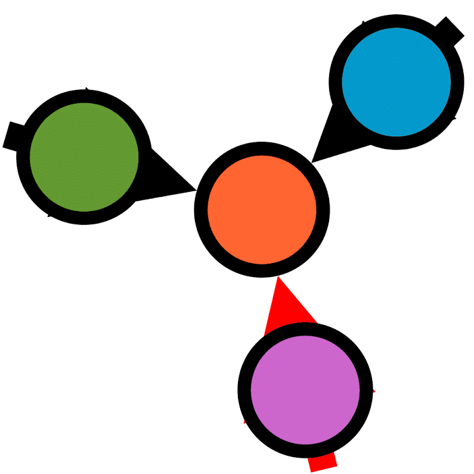

Blog Posts
-
2024-08-05 - On a data structure for a semi accurate human sim for an RTS
-
2024-08-03 - On category theory, functional programming and the unreasonable difficulty of Haskell(CTFPDH) - Log 0
Okay the word "difficulty" is maybe inaccurate, its not difficult per say. More like comparatively more involved than it should be. Functional programming in itself is a big concept, the build system of haskell is one of the most painful things to setup especially using cabal. I still havent been able to do it for a personal project, I have only been using ghc and nothing else. But this blog is not only about my ongoing war with haskell or the impertinance of functional programming and how a bird brain troglodyte like me can even come close to get any form hint of it, its mostly about category theory and how its so useless irl that its probably the most important topics I have come accross in my 22 years of existence. That does not mean I understood not does not it mean it can be easily understood. Although it does mean I will eventually understand it and go around town just shouting at top of my lungs how Monad is a monoid in the category of endofunctors and severely condemn anyone who asks how by saying how they do not know it cause its so easy to understand. This blog is basically my first impressions on all three of them. If anyone ever reads this and wants to come to a judgement that I am wrong and dumb, well I am.
At the time of writing this blog I do not have any idea on what a Monad is, this series of blogs will be about my quest of acquire this forbidden knowledge on the above three topics mentioned. We know these three are severely related, two of them being governed by the other one. Category theory is the mathematics for mathematics. Like a birds eye view of all of math. The name "category theory" suggests the study of categories, which is only kind of true because the impression I got after reading a bit of introductory category theory and watching this video, but its more about the relation between categories, relation between the relation between the categories, categories of relation between the relation between the categories and so on. The relations are the most important aspect of this field of math. I studied about categories, natural transformation and only glimpsed functors. I wish get a more in depth knowledge to a point where I can do accurate enough analysis.
Functional programming is the paradigm every programmer ends up in after a significant amount of programming in your life but also have an intense drive to learn. Functional programming comes hand in hand with a strong type system. People were praising typescript for it, but that was only the vocal majority that has only done JS all their life. Type was a big thing when haskell was invented which I will be touching on later. I feel like without a strong type system the functional programming paradigm does not obey its definition. Type system to FP is like a human without a soul. Functional programming allows a very strict modularizing code that has been aligning with my coding phisolophy lately. Other than zinging one liners for which non functional code needs a much verbose context, functional programming provides a strict and dare I say pure way of thinking. You weirdly think in a backward fashion which is very hard to describe in the limited dictionary of the english alphabet. But I would highly suggest for anyone reading this, to try out FP, try programming in Lisp for a bit, I think getting the vibe is much faster in Lisp, but it does not have a strongly typed system. To describe it more accurately think of boxes of resources that uses pipes to transfer from one box to other. The boxes are self sufficient worlds with all the resources needed already inside, hence any code execution would not change the behaviour of any element outside of these boxes. The type system in the same analogy would be the type of these elements inside of the boxes, they are defined accurately in the outside world and are used strictly as them inside the boxes.
Now why haskell, no reason other than a strong desire to feel a sense of superiority after I learn to use it. On a serious note, Haskell was one the first functional programming languages with a strong type system. The semantics are difficult to understand but makes sense once you get the hang of it, which I havent yet. I dont have much to say about the language. I probably would have more in a future CTFPDH. Anyway this field was extremely wild and pretty new for me and I would like to discover it more and include more technically stuff.
-
2024-08-01 - On abstract algebra
-
2024-07-28 - On generative AI, creativity and possible future project
-
2024-07-23 - Full artificial asistance - Devlog 0
Now that state of the art model for LLM is open sourced with the emergence of Llama 3.1, I have finally started trusting LLMs. Zuck has won me over. Note how I did not use the word intelligence, because I whole heartedly believe, LLMs ARE NOT INTELLIGENCE (at least not yet). So them going rogue is an impossibility. Hence giving a *local* instance of an LLM is not an implausibilty for me. These turn of events today i.e. release of Llama 3.1 and making it open source. I am dreaming of a fully instant, elaboarate and extensive assistant. Humans prefer it when they work with someone else and discuss in real time with them. Now what if that discussion partner is an all knowing agent. This is what started the production of LLMs, but I feel the current LLM environment is still "unapprochable". I mean its still not what I imagine when I imagine an all-knowing partner would be. Firstly lets just make this clear, LLMs are not creative, they can only do what they can from the data they are trained on and result things that are in that data not outside. That is why they can never be intelligent and hence I dont mind giving it my data. Especially tsince it is a local instance and not connected to a companies server (Fine tuning is a different issue I will tackle later)
My idea of an ideal assistant is that it knows my projects, my coding style, my paradigms, my knowledge, and has all the data on top of stuff it is already trained on. It should be able to assist me on the fly and learn my abilities continuously and suggest me stuff regarding my projects pretty accurately and the most important part being, it DOES NOT relay this information to the corresponding companies and now that it open source, I have this strong feeling of achieving this. I imagine myself writing code and my artificial assistant will instantly say my next steps or how I should approach. I should be able to ask it anything on the fly and it woud know the correct answer with respect my preference, but again a reminder it is all knowing so it will give the best advice. I imagine that I talk to the AA(artifical assistant) during my learning process or during my coding process, everything will happen isntantly. I imagine a future where everyt person has one fine tuned to their preferences instead of a very wide general model. I want to achieve this future now that SOTA is an open source model.
I expect this project to go on for years given I am poor and hence cant afford a GPU. But the fact that everything is pretty much planned would make the process much faster when there is an availibilty of resources. The current plan consists of several stages. First is using the Llama3 8b or Gemma 2 2b model as the starting of a fine tuning experiment. I need to first understand how the concept of fine tuning even works. Second stage is using this lightweight finetuned model and use it as copilot for code assitance. It will mostly give me suggestion sof the type of code I can write using a combination of natural language and code. Third stage will be the inclusion of images to this model. Inclusion does not mean that it will generate images (I think thats a different problem altogether, blog post soon ;P ), but rather analyse image given to it as an input. Fourth stage or stage 3b, mainly will allow the model in stage three to have access to my screen and thus a constant suggestions/assistance. I think this is the peak of the mountain right now as once I can overcome this stage, the next steps will be comparatively easier until a bigger mountain(voice suggestion??) comes. I do have an idea for linux as I can just give the outputs of the X display server, although not sure if that will be enough. But for windows it might be much heavy. Fifth stage is basically taking voice as input, its not as big of a problem as it might seem as, this research has been done for decades and models have made with pretty high accuracies to recognize each enunciations possible for each language (although I intend to stick with english for now). I dont wanna get ahead of myself just yet hence I would for now plan till fifth stage only.
Construction of a solid plan does not ensure adequeate implementation especially given the existence of ADHD in my system and constant warfare I am in with myself. But that does not demotivate me to stop making insane shit. My idoelogy is that it is 100% possible to fine tune an LLM model and make it your own. It would function as well with other people's input, it will be YOUR assistant. The speed of doing projects will just skyrocket. I am excited.
-
2024-07-22 - Towards a Solarpunk future
Solarpunk is what cyberpunk wishes to beand fails miserably to achieve it. It is supposed to be utopia that cant adhere to practicality. But these assumptions stem because of the preconcieved notion that people face in modern times. The current climate of everything influences this judgement. Due to absolutely no hope in this world, people think we cant achieve this, some people say the "current political climate wont let it be achieved". The current political climate is made by people who care about their profits hence I give them the benefit of the doubt. I think it can be achieved. I am not here to judge whether the current climate will let it happen, whether capitalism will be doom for our civilization, I dont wanna discuss the politics governing the plausibilty, but rather the science and math that govern the possibilty.
I watched a few too many ghibli movies hence this optimism. This optimism will be the death of me. Very oxymoronic, but the worl wouldnt exist without irony. The current technology age is very overengineered and wasteful, is what you would hear from a non engineering, because that what it looks like from the outside. Optimization is an imporatnt aspect of engineering design and is in fact taken very seriously. Just like how it is proved that a rubiks cube of ANY configuration can be solved in less than 20 moves, I feel any engineering design can be optimized to the utmost optimality. Suboptimality is preffered because of feasiibility, I would like to prove, engineering design is possible with one constraint removed and a better suboptimality can be achieved. The constraint being the fuel, the energy, the main constraint that shapes the objective function the most. I feel the above statement is feasible, possible and rather necassary especially to fuel the hope for humanity.
So heres the plan for the next few eons whenever I get the time, because I am quite busy with multiple objectives, I will research and draw conclusion on everything that can make the current engineering environment to a much more solarpunky one. I think there must be many such patents/research papers that take energy consumption and the type of energy consumptio to be the primary concern and make their design accordingly. I predict they use solar, wind et. I want to strenthen my prediction or may be even come to a different conclusion altogether. This realm is completely out of reach for me just yet, but the optimistic future I dream of is pulling me towards it. The pull is faint and foggy, I want to strengthen it. I also want to see it before(?) I die. I will document every finding so do not worry ;)
-
2024-07-19 - Regular Show
This one will be very quick also probably the only pop culture related post, but I have to write it because I have been binging this show and just cant seem get it oput of my head. Its like one of those few shows that are just instant classics.
-
2024-07-18 - Why Blog?
Why Blog is an important question. I see people write blogs with a definite type of work. As for me I am interested in several things to write about a single topic/direction. Firstly the fact that some people can go on for paragraphs after paragraphs on a single topic without jotting down the points that summarise the main idea. I cant do that,so in a way this will help me develop that skill. Which is kinda important in life. Also this place will act as a idea folde/inspiration folder that is basically all kinds of inspiration/idewas I have. I know making my ideas public is a bad idea, so I will only write the stuff that I am okay with making public.
One of the very important reasons for starting this blog is to prove to myself that I can fisnish something pretty regulary.School forces me to do that but I am not gonna be in school all my life. This has got to do with the severety of procrastnation that hits me sometimes. To combat I wish to finish at least one thing everyday that will increase some amount of dopamine in me. Thats why I would like to finish at least one dog each day. Even during writing this I have to take breaks every two sentence to regenerate my dopamine. This makes it extremely difficult for me to finish any project I start. Thats pretty much all about my difficulty doing task and the reason I started this blog. I thought multiple times to use claude for my blog, but then whats the point really, my "thoughts" will just be the amalagamation of a million sof blogs all over the universe(or wherever they get their data from ). I dont want that.
I should point out the topics that I will be writing about are stuff that I have thought about to projects on for an extended period of time. This blog will also serve as a catalogue for my knowledge conquests. Logging everything is a very good Idea to keep tabs on everything I do. I have too many interest, so much so that I forget about most of the ideas I have. These blogs are to have those catalogued, so in the future if I ever wanna forget my cringey past self, I wouldnt cuz everything will be documented. Any form of creation is good creation. Better than consumption. My environment is very consumer based making me extremely surrendering and not rebelling. This is my way to get a form of rebel to myself so that I get ahold of my life once again. This form of creation is closer to curation. Curation of sparse ideas accross all the domain of knowledge.
I would like to admit, I have written this blogpost in a long timeline of three weeks. It took quite a while to actualy come to my senses and get an idea of the type of content I want to propagate through my blog. Majority of that time was to manually go on witch hunts to hunt for the why from everywhere and however big my inner domain is. Personally I dont think my inner domain is not that big but rather is convulated. I fight with my mind every waking hour(sometimes even in my sleep) of my life, getting the ideas out is difficult and hence this blog formed a feedback loop. I intend to play with this feedback loop to unwind my mind and make everything easier for me. This blog is based mostly on selfish reasons, to just somehow get myself get working in this society. I need to be able to function. Its important for me.